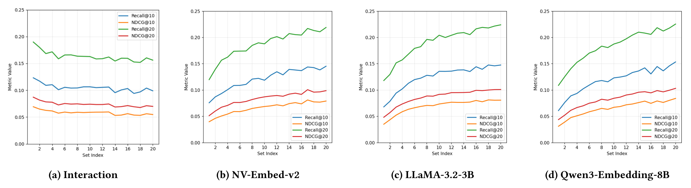
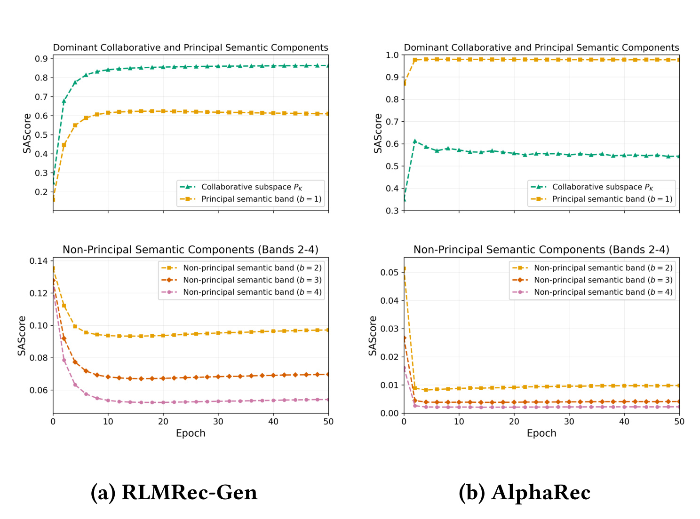
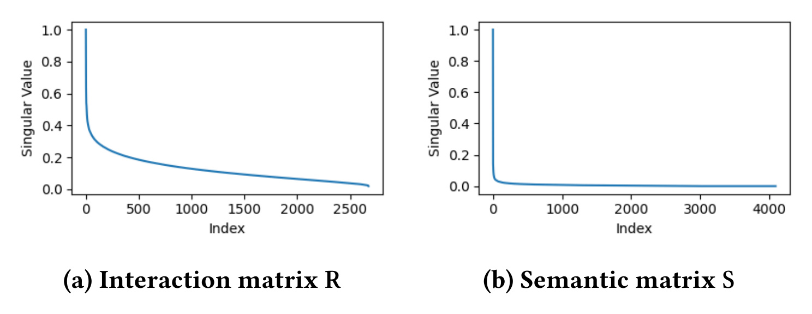
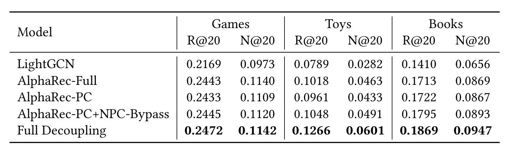
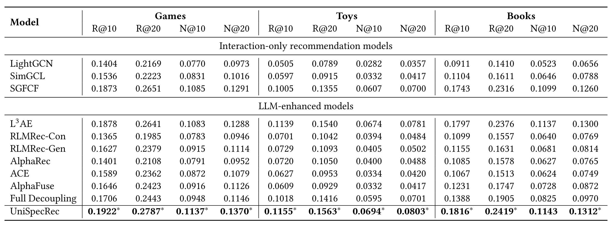
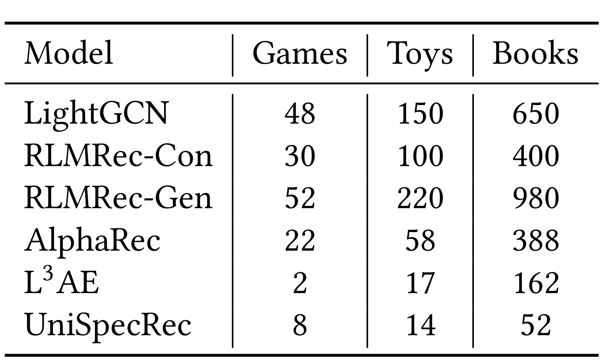
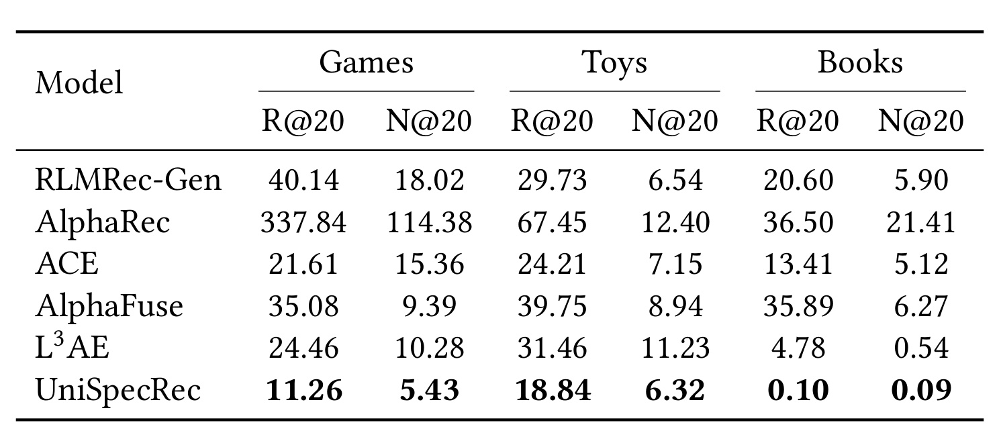
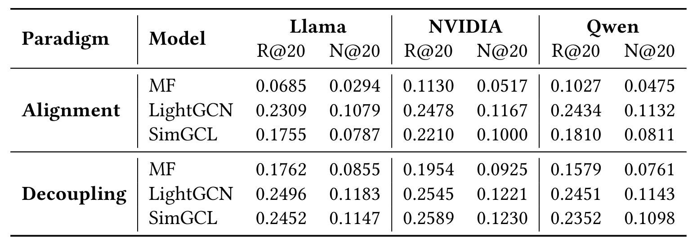
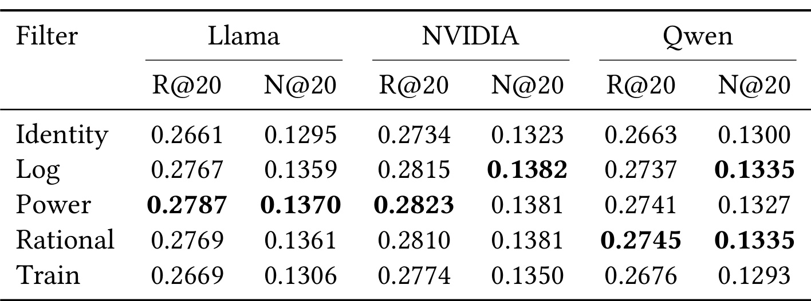
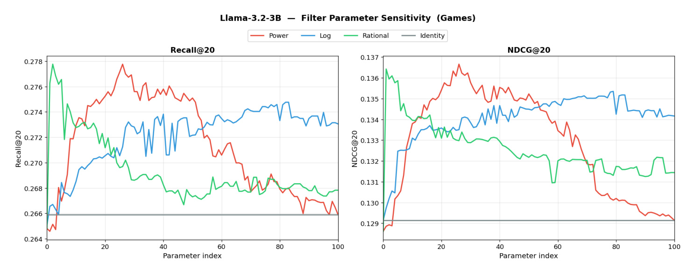

Rethinking Semantic Alignment in LLM-Enhanced Collaborative Filtering: A Spectral Decoupling Approach
这篇论文由奈良先端科学技术大学 Yedong Jin 等人完成，九州大学参与合作，研究对象是 LLM 语义表征如何进入通用协同过滤。作者没有再设计一个更复杂的“语义到行为”投影器，而是先追问对齐本身会留下什么、丢掉什么，再据此提出 UniSpecRec。论文于 2026 年 8 月 25 日公开在 arXiv:2608.24363；首页含 WSDM 2027 样式与占位 DOI，因此本文只把它视为 arXiv 预印本，不把版式当作正式录用证明。本轮未核验到 UniSpecRec 的独立官方代码仓库；PDF 内的 Hugging Face 链接是所用编码器依赖，不是方法实现。
现有 LLM 增强协同过滤通常把语义表征对齐到协同潜空间，却没有解释对齐保留了哪些语义成分、压掉了哪些信息；论文指出，可用于推荐的语义信息并不只集中在主奇异子空间，而常规对齐训练恰会削弱这些非主导语义分量。
1. 背景和问题
1.1 “语义更丰富”不等于“投影后仍然有用”
传统协同过滤从用户—物品交互中学习 ID 表征，优势是直接贴合行为目标，缺点是稀疏用户、稀疏物品和冷启动对象缺少内容支撑。LLM 给每个物品的标题、品类、品牌与描述提供了高维语义向量，也可以把用户历史组织成文本画像。常见做法随即是把语义向量经过线性层或 MLP 投到协同空间，再用推荐损失训练，让两种模态“对齐”。这个步骤看起来合理，但隐藏了一个很强的假设：协同信号与语义信号中对推荐有用的方向，应当能在同一个低维空间中被同一种几何结构表达。
论文把这个假设拆开。对用户—物品二部图而言，同质性使相连节点倾向相似，协同信号的主成分通常对应平滑的低图频模式；高频部分更容易混入噪声。语义矩阵却不是交互图，它的奇异值顺序描述的是文本表示方差，而不是图上的平滑程度。一个在语义矩阵中奇异值较小的方向，可能只占总能量的一小部分，却恰好区分两个交互模式接近、文本属性不同的物品。若因为它“不主导”就被对齐器忽略，语义增强会退化成把已有协同结构重新编码一遍。
论文先用一个统一写法概括既有范式：
符号解释：\(E\) 是协同表征，\(S\) 是冻结 LLM 产生的用户与物品语义表征，\(\psi\) 把语义维度映射到协同维度，\(f_{\Theta}\) 负责融合，\(O\) 是最终用户/物品向量，\(\hat r_{ui}\) 是内积得分。问题不在于这个表达不能优化，而在于 \(\psi(S)\) 被迫迁就协同空间后，原语义空间中哪些方向仍能影响预测并不透明。
1.2 两种信号的“有用频段”方向相反
作者用归一化邻接矩阵 \(A\) 的图频率描述协同信号，再分别对交互矩阵和语义矩阵做谱分解：
符号解释：\(\phi_k,\lambda_k\) 是 \(A\) 的特征向量与特征值；较小的 \(\operatorname{TV}_A\) 表示图上更平滑的低频分量。\(\widetilde R\) 是归一化交互矩阵，\(U_C,V_C,\sigma_c\) 给出协同谱；\(S\) 及其 \(U_S,V_S,\sigma_s\) 给出语义奇异谱。交互主奇异分量与低图频有关，但语义主奇异分量只表示语义方差最大，二者不能直接画等号。
为了避免“大奇异值天然数值更大”干扰结论，作者把语义奇异向量按降序切成 \(B\) 个连续频带，去掉原奇异值权重，使每个成分等权，然后逐带累加：
符号解释：\(b=1\) 是主奇异频带，较大的 \(b\) 向非主导尾部移动；\(B'\) 控制累计纳入多少频带；\(W\) 是把等权重构后的表征用于 BPR 目标的线性映射。对交互矩阵也执行同样的等权、累加控制，所以曲线差异不能简单归因于秩变大。

Figure 1 是整篇论文最重要的问题证据。左一交互信号随着更高图频成分被加入，Recall 与 NDCG 整体下降，符合协同过滤偏好平滑低频结构的经验；右侧三个编码器——NV-Embed-v2、LLaMA-3.2-3B、Qwen3-Embedding-8B——则都随非主导语义频带加入而上升。NV-Embed-v2 的尾部增益最明显，另外两个编码器方向一致但幅度不同。这说明“保留低频/主成分”不是可跨模态复制的规则：协同分支应抑制高频噪声，语义分支却可能需要恢复小奇异值方向。它仍只是三个编码器、三个 Amazon 类目上的离线证据，不能推出所有文本编码器的尾部都有效；但它足以否定“两个空间应采用同一主子空间偏好”的默认前提。
1.3 对齐造成第二次衰减
论文进一步把对齐型推荐器写成低秩逼近：优化器要用维度为 \(d_c\) 的投影后语义向量近似交互矩阵。有限维度和推荐损失会自然偏向解释协同矩阵能量最大的方向：
符号解释：\(\mathcal D\) 是推荐损失，\(S_U,S_I\) 是用户和物品语义向量，\(\psi\) 是共享的语义到行为投影器，\(d_c\) 是协同维度。这个约束不等于严格证明所有训练都会丢失语义尾部，但给出了一个可检验机制：最容易降低交互损失的低秩方向会先被保留。
为观察训练中表征靠近哪个子空间，作者定义 Spectral Alignment Score：
符号解释：\(P\) 是某个目标子空间的正交基，\(O\) 是推荐器学到的表征，\(PP^{\top}O\) 是 \(O\) 在该子空间上的正交投影；分数越高，表示更多能量落在 \(P\) 所张成的方向中。等式成立来自 \(P^{\top}P=I\)，因此它量的是归一化投影能量，而不是余弦相似度或推荐准确率。

Figure 2 把“压掉尾部”变成训练动态。RLMRec-Gen 的主协同子空间与主语义频带重合度快速上升后稳定；AlphaRec 的主语义 SAScore 很快接近 1，而协同重合保持中等。两种模型的具体轨迹不同，但三个非主导语义频带都在早期明显下降，越靠尾部的频带通常越低。结合 Figure 1 中尾部频带对推荐有效的结果，这不是单纯的“模型去噪”：优化器正在移除一部分已被独立效用实验判定有贡献的信息。需要注意，SAScore 是能量重合诊断，不直接证明某个样本为何被错排；它与效用曲线组合后才支撑机制判断。
2. 方法
2.1 从诊断到设计：不要让两种信号共用滤波规则
UniSpecRec 的设计原则可以概括为“各自在原空间处理，最后只融合分数”。协同分支继续使用适合交互图的模型或谱滤波器，例如 SGFCF、LightGCN、MF；语义分支在冻结的 LLM 向量上做 SVD，然后重新标定奇异值。这里没有用一个 MLP 学“最优映射”，因为前面的诊断恰恰表明：以交互目标训练的映射容易回到协同主子空间，并且不同编码器的谱几何会让同一个对齐器表现不稳定。
核心贡献不是把语义奇异值变平本身，而是把“语义谱重标定”和“跨空间对齐”解绑定：前者保留，后者取消；协同结构与语义辨别力直到预测层才相遇。

Figure 3 揭示第一次衰减发生在对齐之前。交互矩阵的归一化奇异值随索引下降较慢，而语义矩阵在很少的主成分之后迅速接近零。于是非主导语义方向进入下游时，本就比主方向弱几个数量级；再经过面向协同损失的低秩对齐，重合度又进一步下降。作者据此提出“两阶段衰减”解释：源语义谱先造成幅值集中，对齐训练再造成方向选择。UniSpecRec 的目标不是无条件放大所有尾部，而是用受控滤波降低谱的陡峭度，并把语义预测留在原空间，从结构上取消第二次衰减。
这种设计也澄清了“参数免费”的含义。UniSpecRec 不给基础 CF 模型增加新的可训练参数，语义 SVD 和滤波可以离线完成；但它仍有 \(p\) 与 \(\alpha\) 两个验证集超参数，也仍依赖用户画像、物品文本与冻结 LLM 编码的预处理成本。因此“无额外可训练参数”不能写成“零计算成本”或“完全免调参”。
2.2 语义分支：用幂滤波恢复非主导方向
语义矩阵经过 SVD 后，作者把每个奇异值从 \(\sigma\) 改成 \(f(\sigma)=\sigma^p\)，默认 \(p\in[0,1]\)：
符号解释：\(U_{S,U}\) 与 \(U_{S,I}\) 是语义左奇异向量按用户行、物品行切开的两部分；\(\widetilde S\) 是滤波后的语义表征；\(\widehat R_S\) 是语义用户—物品得分矩阵。由于打分是两侧向量内积，奇异值权重在得分里变为 \(f^2(\sigma_s)\)。当 \(p=1\) 时保留原谱；当 \(p<1\) 时，大奇异值与小奇异值的比值缩小，尾部相对权重上升；\(p\) 太小则可能把噪声也抬高。
这个分支的输入是用户与物品的文本画像。实验中，物品文本拼接标题、品类、品牌和描述；用户文本由训练历史中的物品画像构成，超过上下文限制时截到最近 50 个物品。两者由同一个冻结编码器生成，取末层 token 平均并做 \(\ell_2\) 归一化。这里存在一个值得复现时注意的混杂：用户语义画像来自交互历史，因此并非纯内容信号。作者做了只用协同用户向量、只给物品语义的控制并称趋势一致，但正文没有展开全部表格。
2.3 协同分支与预测层解耦
实际预测可写成一个块对角内积：
符号解释：\(O_{C,U},O_{C,I}\) 是基础 CF 模型的用户和物品向量，\(I_{d_c}\) 保持协同维度的内积结构，\(\alpha\) 控制语义分支权重。块对角中的非对角块为零，意味着系统没有学习 \(O_C\) 与 \(U_S\) 的跨空间对应关系；两条分支分别产出分数，最终结果等价于它们的加权和。
这一点与 AlphaRec-PC+NPC-Bypass 的控制实验相呼应。若非主导成分在对齐路径内加入，收益不稳定；若让它绕过对齐、直接贡献预测，则三个数据集均有改善；进一步把全语义分支全部解耦时整体最好。因而 UniSpecRec 不是说“主成分没用”，而是说主、非主语义成分都不必经过协同投影器才能参与排序。
2.4 统一谱表达、基础模型适配与复杂度
作者把方法推广成信号特定的统一谱表达：
符号解释：\(f_c\) 服务协同谱，可以是保留平滑成分的线性衰减或 top-\(K\) 截断；\(f_s\) 服务语义谱，用于提高有用非主导成分的相对贡献；两者输出分别是 \(\widehat R_{\mathrm{CF}}\) 与 \(\widehat R_S\)。这条加法明确表示，统一发生在得分层而不是表示层。
如果协同骨干本身是 SGFCF 一类谱方法，\(\widehat R_{\mathrm{CF}}\) 可直接来自协同谱滤波；若是 LightGCN 或 MF，则照常训练骨干，再把其预测与语义分数相加。训练阶段没有新增跨模态目标；推理阶段也不需要 MLP 投影器，但需要能对两条分支做候选打分或因子化计算。语义矩阵的 reduced SVD 复杂度写为 \(\mathcal O((|U|+|I|)d_s^2)\)，其中 \(d_s\) 通常不超过 4096，可作为一次性离线步骤。论文还把因子化预测成本写为 \(\mathcal O(|U|K|I|)\)。这并不自动适合十亿级全量打分：线上工程仍需结合候选召回、近似检索、分片索引与增量刷新，论文的三类 Amazon 规模不足以证明超大规模服务成本。
3. 实验结果
3.1 数据、协议与基线
实验使用 Amazon Games、Toys、Books 三个类目，只保留评分大于 3 的交互并做 10-core 过滤，按 8:1:1 切分训练、验证、测试。Games 有 5,222 位用户、2,676 个物品、85,690 条交互，密度 \(6.2\times10^{-3}\)；Toys 为 14,750/13,358/250,509，密度 \(1.3\times10^{-3}\)；Books 为 25,300/30,966/640,901，密度 \(8.2\times10^{-4}\)。评测对每位用户的全部未观察物品排序，指标为 Recall@10/20 与 NDCG@10/20，不是采样负例协议。
交互基线包括 LightGCN、SimGCL、SGFCF；LLM 增强基线包括 RLMRec-Con/Gen、AlphaRec、Full Decoupling、ACE、AlphaFuse、L3AE。ACE 与 AlphaFuse 原本面向序列推荐，这里被改造成 AlphaRec 骨干上的物品侧变换，所以结果只说明这种适配在通用 CF 设置下的表现，不能否定它们原任务中的价值。训练型方法使用 AdamW、学习率 \(10^{-3}\)、批量 4096、隐藏维度 32，以验证 NDCG@20、耐心 100 早停；硬件为 A100-PCIe-40GB 与 EPYC 7702P。
3.2 非主导成分应该走哪条路径
作者先在 Qwen3-Embedding-8B 上做受控比较。AlphaRec-Full 使用全部语义成分对齐，AlphaRec-PC 只使用主成分，AlphaRec-PC+NPC-Bypass 让非主导成分绕过对齐直接加到得分，Full Decoupling 则让完整语义分支都与 LightGCN 分开。

Table 1 的关键不只是 Full Decoupling 数值最大，而是增益路径具有一致性。AlphaRec-Full 与 AlphaRec-PC 在三个数据集没有稳定胜负，说明“把尾部也塞进投影器”不能可靠利用它；NPC-Bypass 相对 PC 在 Games、Toys、Books 的 Recall@20 从 0.2433/0.0961/0.1722 提到 0.2445/0.1048/0.1795，三个方向都为正；完整解耦进一步达到 0.2472/0.1266/0.1869。Toys 上从 PC 到完整解耦的相对增幅约 31.7%，远大于 Games 的约 1.6%，与 Games 交互更密、语义补充空间更小的解释一致。不过这是离线相关模式，不足以把密度认定为唯一因果变量。
3.3 总体准确率：相对协同骨干提升明确，但对最强综合基线的优势较窄

Table 3 中，UniSpecRec 在 12 个数据集—指标组合上都给出最高数值。以其协同骨干 SGFCF 的 Recall@20 为参照，Games 从 0.2651 到 0.2787、Toys 从 0.1355 到 0.1563、Books 从 0.2316 到 0.2419，对应论文报告的相对提升 5.1%、15.3%、4.4%。但更严格地与表中每个数据集的最强综合基线比较，Toys 的 L3AE 已到 0.1540，Books 已到 0.2376，因此 UniSpecRec 的相对优势约为 1.5% 与 1.8%；这仍是改进，却不像相对 SGFCF 的百分比那样大。表中星号表示相对最佳基线的双尾 \(t\) 检验 \(p<0.05\)，UniSpecRec 多数单元有星号，但 Books 的 NDCG@10 没有星号，不能把“全指标显著”作为结论。
对齐型 RLMRec-Con、RLMRec-Gen、AlphaRec 在三个类目普遍低于 UniSpecRec，ACE 与 AlphaFuse 的通用 CF 适配也没有追上解耦方案。Full Decoupling 比对齐方法稳定，但它使用 LightGCN；最终 UniSpecRec 换成 SGFCF 并做信号特定滤波，因此“解耦范式”和“更强协同骨干/滤波”共同构成最终结果。论文随后用匹配骨干实验来进一步隔离范式因素，这比只看 Table 3 更有说服力。
3.4 时间与跨编码器稳定性

Table 4 把训练型方法的“到早停总训练时间”与免训练方法的“总处理时间”放在同一硬件上。UniSpecRec 在 Games/Toys/Books 为 8/14/52 秒；最快训练型基线 AlphaRec 为 22/58/388 秒，因此分别约快 2.8、4.1、7.5 倍。相对 L3AE，它在最小 Games 上更慢（8 对 2 秒），Toys 略快（14 对 17 秒），Books 则快约 3.1 倍（52 对 162 秒）。这支持“随物品数增长更有利”的趋势，但两类计时口径一个是训练、一个是矩阵处理，且没有包含 LLM 文本编码、数据读取和在线索引维护，不能把表中秒数直接当成端到端部署时延。

Table 5 以 LLaMA-3.2-3B、NV-Embed-v2、Qwen3-Embedding-8B 三个编码器下 Recall@20/NDCG@20 的方差衡量稳定性，越低越好。UniSpecRec 在六个数据集—指标位置均最低：Games 为 11.26/5.43，Toys 为 18.84/6.32，Books 仅 0.10/0.09（均乘 \(10^{-6}\)）。AlphaRec 的 Games 方差高达 337.84/114.38，体现学习投影器对源语义几何较敏感。这里的“鲁棒性”仅指三个编码器之间的离线指标波动，不等价于跨随机种子、跨时间分布漂移或对抗扰动鲁棒；表格也没有置信区间，读者应保持这一口径边界。
3.5 跨骨干、滤波器与超参数

Table 6 在 Games 上对 MF、LightGCN、SimGCL 分别构造对齐版与解耦版，并在三个语义编码器下比较。18 个 Recall/NDCG 单元全部由解耦版高于同骨干对齐版。差距在 MF 上尤其大：NV-Embed-v2 的 Recall@20 从 0.1130 升至 0.1954，相对约 72.9%；LLaMA 下从 0.0685 到 0.1762。LightGCN 的差距较小但仍一致，SimGCL 也同方向。这组匹配实验把“UniSpecRec 只是换了 SGFCF”这一替代解释显著削弱，说明预测层解耦在所测骨干中具有可迁移性；不过它只在 Games 上执行，尚未覆盖最稀疏的 Books 或更异质的工业数据。

Table 7 比较 Identity、Log、Power、Rational 和可学习 MLP 滤波器。三个编码器下，Identity 与 Train 都明显落后于非恒等手工滤波；Power 在 LLaMA 的 Recall/NDCG 和 NVIDIA 的 Recall 上最好，Log 或 Rational 在其余个别位置略胜。这说明有价值的不是“任何额外变换”，而是明确补偿谱集中；一个无约束小 MLP 即使以 BPR 训练，也可能重新偏向主成分。Power 并非每一列绝对最佳，因此应把它理解为稳健默认项，而不是理论最优滤波器。

Figure 4 展示 Games + LLaMA-3.2-3B 下沿参数索引扫描的 Recall@20 与 NDCG@20。Power 曲线在中间较宽区间保持较高，Log 与 Rational 随参数变化更剧烈，Identity 是水平基线；这支持使用粗粒度搜索寻找可用 \(p\)。Table 8 给出的验证集最优值更具体：LLaMA 在 Games/Toys/Books 的 \((p,\alpha)\) 为 (0.27,0.35)/(0.15,0.40)/(0.22,0.34)，NV-Embed-v2 为 (0.58,0.40)/(0.48,0.42)/(0.10,0.30)，Qwen3 为 (0.58,0.21)/(0.53,0.38)/(0.21,0.24)。\(p\) 跨 0.10–0.58，\(\alpha\) 则集中在 0.21–0.42；作者建议 \(\alpha\approx0.35\) 与 0.25–0.40 的粗扫，但这只是九个配置的经验，不是免验证集定理。
4. 总结
4.1 我的判断
UniSpecRec 最有价值的部分是对“对齐”这个默认动作做了可证伪审计。Figure 1 证明两种模态的有用谱区间不同，Figure 2/3 给出源谱集中与训练抑制两级机制，Table 1 与 Table 6 再用旁路和匹配骨干验证：信息不是不存在，而是经过共享空间后没有被有效使用。方法因此非常克制——语义谱单独重标定、协同骨干保持原样、预测层线性融合。它没有宣称发现所有非主导成分的语义含义，也没有把离线精度包装成在线收益，这种边界比“再加一个跨模态模块”更值得借鉴。
4.2 对推荐系统与大模型系统的启发
对推荐工程，第一条启发是把多模态/文本特征的离线诊断前移：在设计融合网络前，先测每个谱段、子空间或特征簇的边际效用，再观察训练是否系统性抑制这些部分。第二条是把表示融合与分数融合都作为一等候选；如果两个空间的归纳偏置不同，后融合可能比强制共嵌入更稳。第三条是为冷物品、长尾物品和高密用户分别报告收益，因为 Table 1 暗示交互密度会改变语义分支的边际空间。
对大模型/RAG/Agent 系统，类似风险也存在：把检索嵌入、行为状态、工具反馈全部投到一个“统一记忆向量”里，可能让训练目标偏好的主方向吞掉低能量但有判别力的证据。UniSpecRec 提供的不是可直接复制的推荐公式，而是一种审计范式：分别测量源空间中的信息分布，追踪对齐过程的投影能量，再决定是否保留独立打分通道。
4.3 局限、复现重点与后续跟进
局限至少有五点。第一，实验只覆盖三个 Amazon 类目和离线 all-item ranking，没有线上点击、曝光公平或业务约束；“通用推荐”仍是有限外推。第二，用户文本画像由交互历史构造，语义与协同信号并非完全独立，虽有 item-only 控制但正文证据有限。第三，非主导成分有用是三个编码器上的经验结论，换到领域专用编码器、多模态编码器或更嘈杂文本后，幂滤波可能放大噪声。第四，效率表不含 LLM 编码、SVD 增量更新、候选索引和全量服务成本；静态离线矩阵与动态线上系统仍有距离。第五，论文未核验开源代码，首页会议字段含占位 DOI，复现与出版状态都需要后续确认；伦理部分也明确没有评测隐私泄漏、公平性和不同群体的曝光质量。
后续最值得做四项。其一，按活跃度、物品热度和真正冷启动程度切分 Recall/NDCG，验证尾部语义增益到底来自冷物品还是普遍排序改进。其二，把 SAScore 审计扩展到不同层、不同训练轮次和样本级错误，确认被抑制的方向承载哪些属性，而不只观察矩阵能量。其三，在百万级物品与增量文本更新下测 randomized/incremental SVD、索引体积、刷新时延和双分支服务成本。其四，等待独立代码或正式会议页面后复核数据预处理、随机种子、显著性检验与 Supplement 中 item-only 结果；在此之前，最适合把 UniSpecRec 当作一个强有力的设计假设和可复现实验清单，而不是已经普遍成立的线上方案。